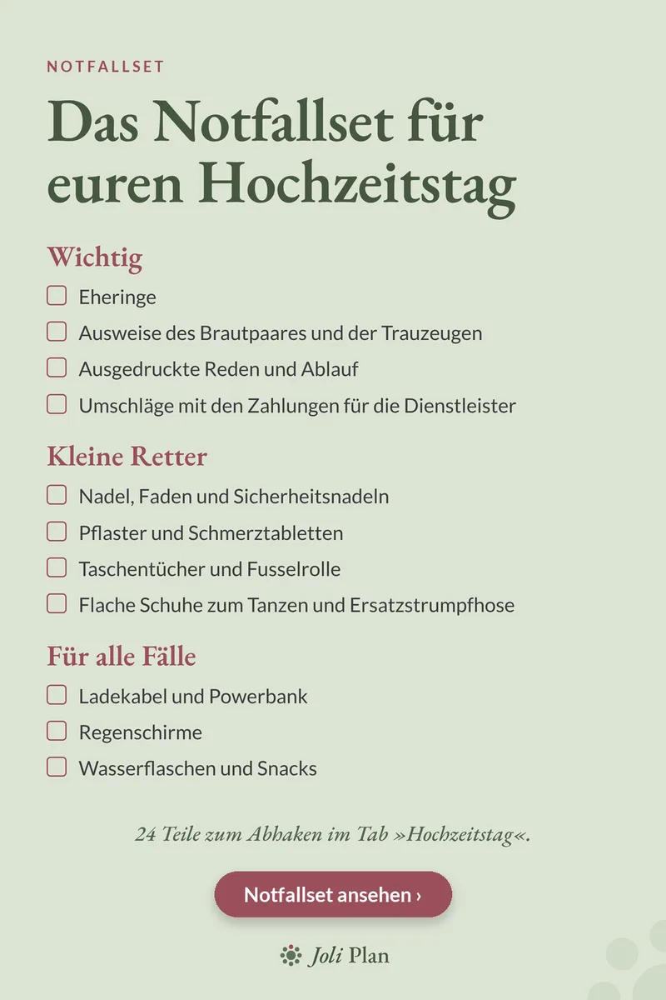

Hochzeitstag
Notfallset Hochzeit: Checkliste für den Hochzeitstag
Aktualisiert am 25/10/2026
Am Hochzeitstag geht fast immer eine Kleinigkeit schief: ein Knopf, ein Absatz, ein leerer Akku. Ein Notfallset, das ihr rechtzeitig packt, hilft bei den meisten dieser Kleinigkeiten.
Den Hochzeitsplaner auf Etsy ansehen ›

Wichtig
- Eheringe
- Ausweise des Brautpaares und der Trauzeugen
- Ausgedruckte Reden und Ablauf
- Umschläge mit den Zahlungen für die Dienstleister
Kleine Retter
- Nadel, Faden und Sicherheitsnadeln
- Pflaster und Schmerztabletten
- Taschentücher und Fusselrolle
- Flache Schuhe zum Tanzen und eine Ersatzstrumpfhose
Für alle Fälle
- Ladekabel und Powerbank
- Regenschirme
- Wasserflaschen und Snacks
Wer das Set trägt
Gebt das Notfallset einer Person, die den ganzen Tag in eurer Nähe ist, zum Beispiel einem Trauzeugen. So müsst ihr selbst an nichts denken.
Beschriftet die Umschläge für die Dienstleister mit Namen, damit nichts verwechselt wird. Diese Liste ist eine Auswahl der wichtigsten Dinge: Ergänzt sie um alles, was ihr persönlich braucht, etwa Medikamente.